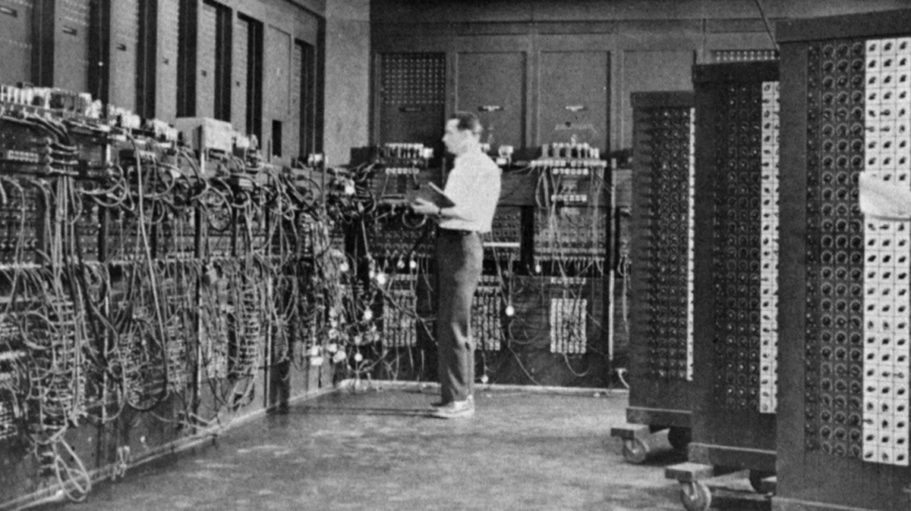

<!DOCTYPE html>
<html lang="en">
    <head>
        <title>A historia da internet - 1960</title>
    </head>
    
</html>
<style>
     h1{
        font-size: 100px;
        color:blue;
        font-family: 'Segoe UI', Tahoma, Geneva, Verdana, sans-serif;
        text-align: center;
        
    }
    
</style>
<h1>A internet em 1960</h1>
<center>
<body></body>
</center>
<style>
    body{
        font-size: 30px;
        color: black;
        font-family:Verdana, Geneva, Tahoma, sans-serif;
        text-align: center;
        }
</style>
    <body>
        <p>A história da Internet está ligada aos primeiros computadores conectados à eletricidade. 
        Os primeiros modelos dessas máquinas surgiram na década de 1950 e eram enormes, lentos e muito pesados. 
        Eles não eram nada como os computadores de hoje, eram super rápidos e super finos.</p>
         
        <p>Além disso, eles também estão presentes apenas em laboratórios científicos para fins profissionais. 
        Não há fabricantes que vendam e distribuam em larga escala para uso pessoal. E estão disponíveis 
        apenas nos países pioneiros onde a Internet foi criada, como Estados Unidos, Reino Unido e França. 
        Na década de 1960, o Departamento de Defesa dos EUA começou a desenvolver uma rede de interconexão
        de computadores em um de seus laboratórios.
        Chama-se Arpanet (Advanced Research Projects Agency Network).</p>
        <p>A rede foi usada principalmente para fins militares. Era uma forma do governo dos Estados Unidos
        se proteger e manter as comunicações abertas caso o pós-Guerra Fria e os acontecimentos históricos 
        favorecessem a ascensão da União Soviética.</p>
        <p>Este foi o projeto original da Arpanet, que interconectava computadores locais em uma rede privada, 
        que inspirou a criação de uma rede global que permitia que várias redes se conectassem simultaneamente. 
        Este conceito foi originalmente chamado de networking e foi um dos pontos-chave na ascensão da Internet.
        </p>
    </body>
    <p>
        <center>
            <a font href="anos 1970.html">anos 1970</a>
            <a font href="Trabalho.html">Voltar ao inicio</a>
        </center>
    </p>
    